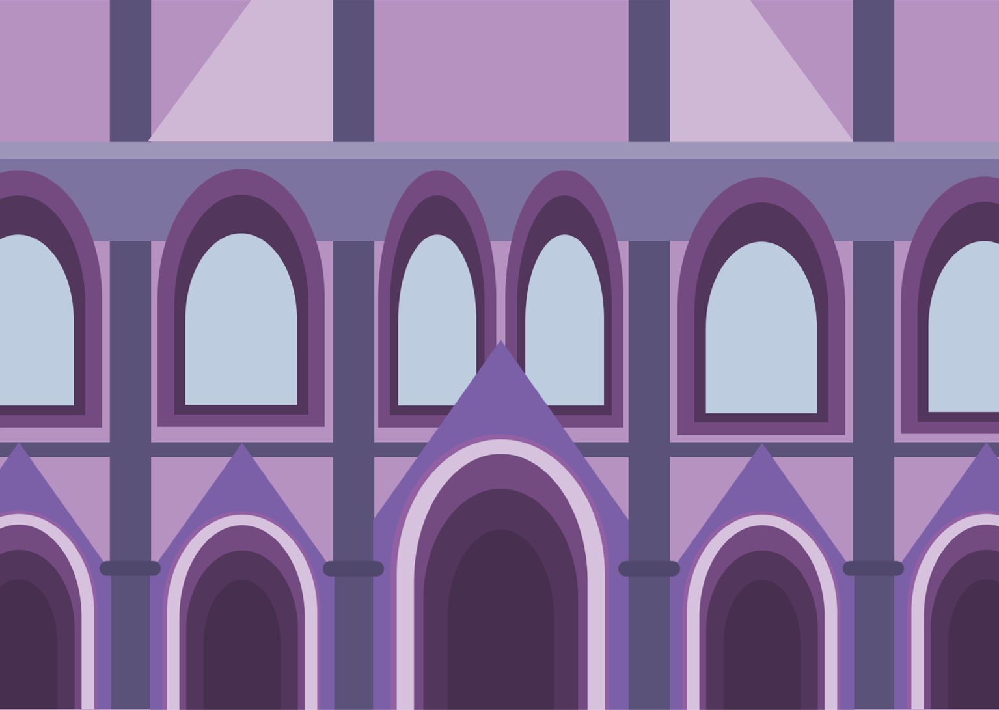

본 페이지는 HTML 연습을 위한 페이지입니다.
H T M L
작업 목표
작업 순서
이미지 삽입하기

음악 삽입하기
표 만들기
| 등장인물 | 주인공 | 집사 | 여인 |
|---|---|---|---|
| 설명 | 한 여인을 따라 신비로운 저택에 들어가게 된다.
|
저택을 지키고 있는 인물
|
주인공을 매료시킨 대상
|
텍스트 입력창 만들기
버튼 만들기